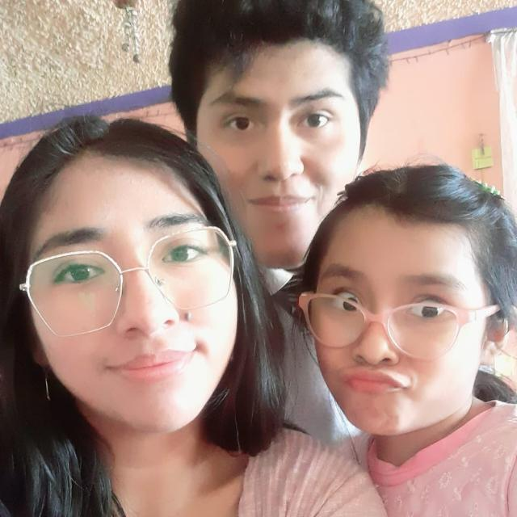

About Me
My name is Rocio Apaza Paricahua. I was born in Arequipa City, Peru, and I live with my family. I am currently a student of BYU-Idaho. My daughter and my husband are my love, and I love spending time with them. I also like to read books and learn new things.
Peru my Country
Arequipa is the colonial-era capital of Peru’s Arequipa Region. Framed by 3 volcanoes, it's filled with baroque buildings constructed from sillar, a white volcanic stone. Its historic center is anchored by the Plaza de Armas, a stately main square flanked on its north by the 17th-century neoclassical Basilica Cathedral, which houses a museum displaying religious objects and artwork